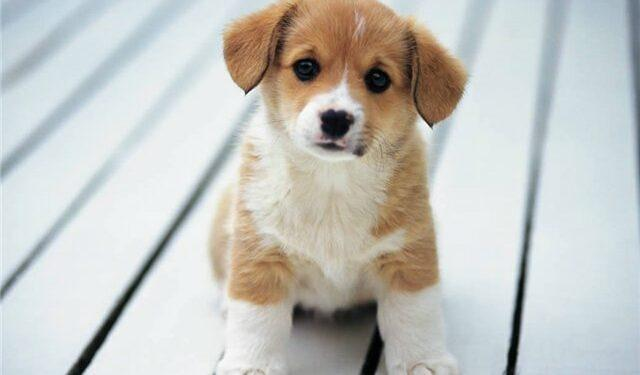
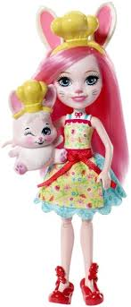
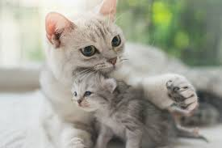
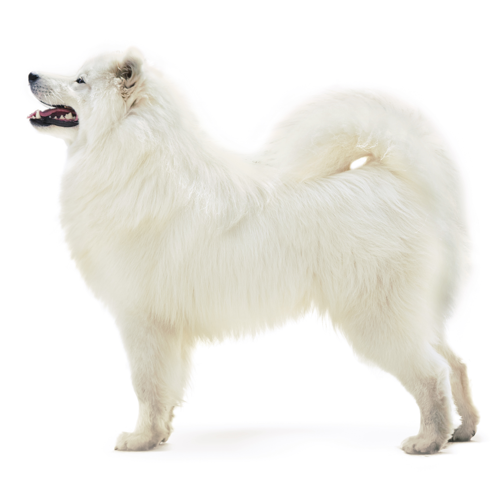

Первоначально домашняя собака была
выделена в отдельный биологический вид.
Члены семьи
Имя
Возраст
Папа
Саша
40
Мама
Таня
40
Сестра
Ира
14
Сестра
Марина
5
Сестра
Марина
5
Сестра
Марина
5
Любимые игры
Маинкрафт
компьютерная инди-игра в жанре песочницы,
разработанная шведским программистом Маркусом Перссоном
и выпущенная его компанией Mojang AB. Перссон опубликовал
начальную версию игры в 2009 году; в конце 2011 года была выпущена
стабильная версия для ПК Microsoft Windows, распространявшаяся через
официальный сайт.

Куклы
предмет (фигура) в виде человека или животного,
сделанный из ткани, бумаги, дерева, фарфора,
пластика и других материалов.
Кошки мышки
Играть можно на столе или на полу
(на полу даже удобнее). Каждый игрок кладет перед
собой одну карту с надписью «пи-пи» (оставшиеся карты
с этой надписью в игре не участвуют).
Любимые животные
кошка
В Японию кошки были завезены в VI веке и
служили высшей наградой, которую мог дать
мператор своим приближённым. Существует
несколько вариантов легенды о кошке,
помогающей своей хозяйке или хозяину.

Собака
Согласно национальному опросу,
проведённому в 2007—2008 годах, 63 %
американских семей содержат домашних
животных, что составляет 71,1 млн домохозяйств.
Из них 44,8 млн являются владельцами собак,
общее количество собак — 77,5 млн

 Кошки мышки
Играть можно на столе или на полу
(на полу даже удобнее). Каждый игрок кладет перед
собой одну карту с надписью «пи-пи» (оставшиеся карты
с этой надписью в игре не участвуют).
Кошки мышки
Играть можно на столе или на полу
(на полу даже удобнее). Каждый игрок кладет перед
собой одну карту с надписью «пи-пи» (оставшиеся карты
с этой надписью в игре не участвуют).